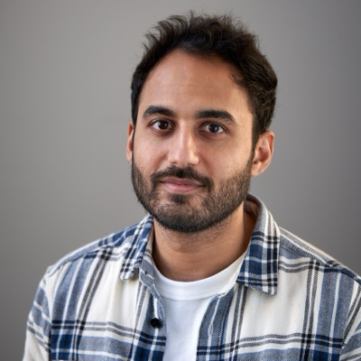
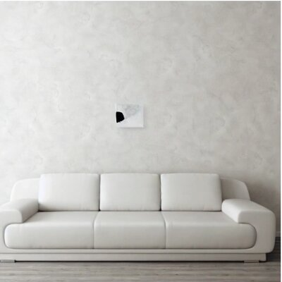
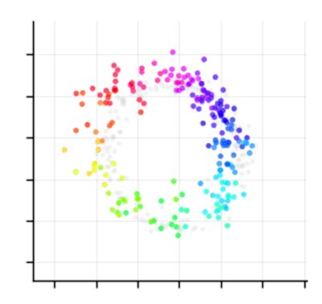
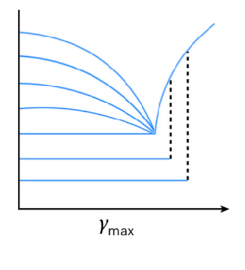

Simons Center Independent Postdoctoral Fellow
Simons Center for Computational Physical Chemistry, New York University
Jul 2025 – present

Hi! I'm Rishabh Sharma.
I'm a Simons Center Independent Postdoctoral Fellow at New York University, working at the intersection of AI and physics. My current research focuses on the physics of memorization and privacy in diffusion models, world models and their emergent neural representations, and mechanistic interpretability.
Previously, I completed my Ph.D. in Physics at the Tata Institute of Fundamental Research, Hyderabad, where my work on activity-induced transitions in amorphous solids was published in Nature Physics. I was awarded the 2025 Ramakrishna Cowsik Medal for this work.



* denotes co-first authors